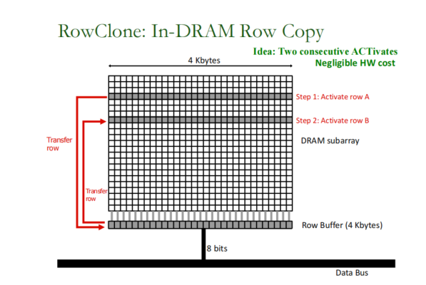

参考文献： A Modern Primer on Processing in Memory
作者： Onur Mutlu 【ETH Zurich / Carnegie Mellon University】
Saugata Ghose 【Carnegie Mellon University / University of Illinois at Urbana-Champaign】
Juan Gomez-Luna【ETH Zurich】
Rachata Ausavarungnirun 【King Mongkut’s University of Technology North Bangkok】
主存，使用动态随机存取存储器（DRAM）技术构建，是几乎所有计算系统的主要组件，包括服务器、云平台、移动/嵌入式设备和传感器系统。在所有这些系统中，现代应用程序的数据工作集的大小正在迅速增长，而对此类数据的快速分析的需求也在不断增加。因此，主存正在各种计算系统和应用程序中成为一个越来越重要的瓶颈。缓解主存瓶颈需要有效地提高内存容量、能源、成本和性能。不幸的是，近年来，特别是在过去的十年里，要扩展所有这些维度变得越来越困难，因此主存瓶颈正在恶化。
造成主存瓶颈的一个主要原因是与数据移动相关的高能量和延迟成本。在现代计算机中，要对驻留在主存中的数据执行任何操作，处理器必须从主存中检索数据。这就要求内存控制器通过一个相对缓慢且耗电的芯片外总线（称为内存通道memory channel）向DRAM模块发出命令。DRAM模块通过内存通道发送所请求的数据，然后将数据放在缓存和寄存器中。一旦数据在其寄存器中，CPU就可以对数据执行计算。从DRAM移动到CPU的数据会导致很长时间的延迟，并消耗大量的能量。CPU 没有重用带到缓存中的许多数据，这对高延迟和能源成本没有什么好处。
数据移动的成本是当代计算机系统中以处理器为中心的一个基本问题。CPU被认为是系统中的master，计算只在处理器（和加速器）中执行。相比之下，数据存储和通信单元，包括主存储器，被视为无法计算的不智能的工人。由于这种以处理器为中心的设计范式，数据在系统中的计算单元和通信/存储单元之间大量移动，以便可以在其上进行计算。随着当代和新兴的应用程序日益以数据为中心的本质，以处理器为中心的设计范例导致了在性能、能源和成本方面的巨大低效。
例如，单个计算节点内的大部分real estate已经专门用于处理数据移动和存储（例如，大型缓存、内存控制器、互连和主存），我们最近的工作表明，移动设备超过62%的整个系统能量用于广泛使用的移动工作负载的处理器和存储器层次之间的数据移动
现代系统中数据移动的巨大开销，以及技术的进步，使内存和逻辑能够更好地集成，最近促使人们重新审视一个旧的想法，我们通常称之为存内计算（processing-in-memory，PIM）。关键思想是将计算机制放置在数据存储处或附近（即存储器芯片内部、3d堆叠存储器的逻辑层、存储器控制器中或大缓存内部），以便与当代以处理器为中心的系统相比，在完成计算和存储数据之间的数据移动减少或消除。processing-in-memory，也称为近数据处理（NDP），它能够使用(1)内存本身 或 (2)内存子系统内部的某种形式的处理逻辑（如加速器、简单内核、可重构逻辑）来执行操作和执行软件任务
PIM的想法已经存在了至少50年。然而，由于各种原因，过去的努力并没有被广泛采用，包括1)将处理元素与DRAM集成的困难，2)缺乏当前技术和应用程序所面临的与内存相关的关键扩展挑战，和3)数据移动瓶颈对系统成本、能源和性能并不像今天那么重要。由于现代内存体系结构的进步，例如，以3d堆叠的方式将逻辑和内存进行集成，最近的各种工作探索了一系列具有多个不同目的的PIM体系结构。我们认为，以新的视角（即新的方法和想法），利用新的内存技术，以现实的工作负载和系统的方式和简化采用和可行性的心态，重新检查PIM是至关重要的。
在本章中，我们将探讨在现代系统中实现内存中处理的两种新方法。第一种方法最小限度地改变内存芯片，以执行简单而强大的通用操作，这些操作本身效率高，或者可以在执行。我们将这种方法称为PUM (processing using memory) 。属于这种方法的一些解决方案利用现有的DRAM设计，使用DRAM的模拟操作原理巧妙而有效地执行批量操作（即操作整个行DRAM单元），如批量复制、数据初始化和位操作。其他解决方案利用新兴的非易失性存储器技术的模拟操作原理来执行类似的批量操作或其他专门的计算，如卷积和矩阵乘法。
第二种方法通过利用传统存储器控制器或相对较新的3d堆叠存储器技术的逻辑层)中的计算能力，以更通用的方式实现PIM。我们称这种接近内存的处理的一般方法为。这种方法特别受到3d堆叠存储技术的推动，该技术包括存储层下的逻辑处理层。为了堆叠多层存储器，3d堆叠芯片使用垂直通过硅孔（TSVs）将各层相互连接，并连接到芯片的I/O驱动器。tsv在3D堆栈层内提供了比内存通道外部更大的内部带宽。一些这样的3d堆叠内存架构，如混合内存立方体HMC和高带宽内存HBM，包括一个逻辑层，在那里设计师可以添加一些处理逻辑（例如，加速器，简单的核心，可重新配置的逻辑）来利用这种高内部带宽。未来的die堆叠技术，如monolithic 3D ，可以通过极大地提高内部带宽和内存层之间的逻辑层数量来放大这种方法的好处。
无论PIM采用何种方法，系统架构师和程序员都必须解决一些关键的实际采用挑战，以使PIM在整个计算领域和工作负载的不同领域中得到广泛采用。除了描述这两种关键方法的工作，我们还在本教程中讨论这些挑战，以及解决这些挑战的现有工作。
随着现代应用数据工作集大小的增长，对更高的DRAM容量和性能需求也在不断增加。然而，由于DRAM技术的扩展变得越来越具有挑战性，包括难以以低成本扩大DRAM芯片容量，同时保持性能、能效和可靠性。这导致了满足现代工作负载不断增长的内存需求变得越来越昂贵和困难。DRAM技术的扩展影响了DRAM的各项主要特征，包括容量、带宽、延迟、可靠性、能效和成本。因此，这些趋势促使了对智能内存控制器的需求，以更好地实现主存储器在各项指标上的扩展。这些智能内存控制器还可以更容易地为内存中的处理铺平道路，并作为PIM的起始基板。这些趋势使得设计低延迟主存储器芯片变得越来越重要，特别是在需要实时处理大量数据的情况下。
有几个key concerns:
同时缩放DRAM容量（即密度或每位成本）、带宽和延迟是困难的
DRAM技术扩展到更小的节点会对DRAM的可靠性产生不利影响。
随着DRAM单元的尺寸减小，电容和接入晶体管都变得更不可靠，更容易泄漏，通常更容易受到电噪声和干扰的影响。
内存技术的缩放会导致内存错误更频繁地出现
激进的DRAM技术扩展导致的可靠性问题可能导致新的安全漏洞。
比如RowHammer
重复刷一个DRAM行，改变相邻行
使得可能一个应用程序的页对应的DRAM行持续被刷新导致操作系统的页对应的行发生比特翻转
RowHammer攻击可以借此获得一部分内核特权
（1）通过JavaScipt远程接管服务器
（2）一个虚拟机通过诱导错误来接管另一个虚拟机
（3）无权限的应用程序可以控制一个安卓设备
（4）攻击者可以通过windows10的浏览器获取任意读写权限
主存的能耗
DRAM本质上是一种电力和能源消耗器，因为即使不使用它，它也会消耗能源
三个主要的原因导致主存能耗的情况更糟糕
主存的容量、带宽、并行性和复杂性都在增加，由于更高的动态活动量和更高的整体静态功耗，导致能量消耗自然增加
主存仍然是主处理芯片，因此没有受益于许多节能机制有更好的集成
DRAM技术扩展的困难使得DRAM节能变得非常困难。事实上，添加到DRAM芯片中的一些机制，以补偿在较小技术的几代中的可靠性问题
纠错机制
高刷新率
因此，相对于计算平台上的其他组件，主存的功耗和能耗正在增加。由于能源效率和可持续性是当今计算平台的关键必需品，因此减少主存的能源和功耗至关重要
解决上述四个主要问题的一个关键方法是设计能够更好地管理主存的智能内存控制器
一些关于智能内存控制器帮助克服现代DRAM主要的扩展挑战的例子
以较低概率刷新DRAM相邻行来避免RowHammer等安全问题
这种方法被称为PARA (Probabilistic Adjacent Row Action,概率刷新行）
Flipping Bits in Memory Without Accessing Them: An Experimental Study of DRAM Disturbance Errors【ISCA'14】
通过对不同行的保留时间特征（retention time characteristics）的理解来缓解DRAM刷新问题
由于制作工艺的不同，DRAM Cell的保留数据的时间是有差异的，大部分的DRAM Cell能保持比较久而小部分DRAM Cell只能保留一小部分时间。现代的内存控制器以最坏情况平等对待每一个DRAM Cell，从而造成了高能耗和性能损失。
识别每一个行的最小保留时间
当这个行真的需要刷新了才去刷新这行
把很weak的行退役，不把数据放在里面存储
也就是需要在线分析DRAM Cell的保留时间特征 并 在线调整每一行的刷新率
（过往的工作）可以以很小的代价消除75%的刷新，从而显著降低能耗提升性能
基于不是所有的DRAM Cell都需要相同的访问时间的事实，智能内存控制器利用访问延迟中不同类型的异构性？
温度：（例子）低温相对于高温时的读写延迟会低很多
智能内存控制器可以使访问延迟适应工作温度来降低内存延迟
多数DRAMCell可以比厂商定制的参数快得多
可以识别具有可靠低延迟访问的DRAMCell，使用这些Cell降低系统的访问延迟
电压：基于DRAM部分安全运行时的最小电压是不同的
利用上述特征，将DRAM部分的工作电压从标准电压降低到最小电压之上，降低系统能耗
但需要增加bank延迟，以容忍降压产生的错误 ？
bank subarrays 并行访问
改芯片降低bank冲突延迟来实现bank里的subarrays可以被独立访问
利用对Bank的并行刷新和访问降低刷新对性能的影响
为什么这就可以降低刷新对性能的影响呢？
通过对DRAM Array的划分降低对DRAM Bank的延迟
于是行的一部分会比其他部分更快地访问
智能内存控制器可以决定哪些数据被放在更快（更慢）的行
如果需要再次访问某一行，最近被访问或者最近被刷新的内存行能比标准延迟更快地访问
因为对该行的访问和刷新操作已经为该行补充过电荷
智能内存控制器跟踪最近被访问/刷新的行的充电程度，并在使用该行时调整适应充电程度的延迟
显著降低访问和刷新延迟
利用延迟-可靠性的权衡
以低延迟和高吞吐量生成一个真正的随机数 ？？？ RANDOM
使用DRAM设备快速评估物理上不可复制的功能 ？？？ PUF
不同的DRAM Cell在延迟-可靠性权衡上表现出不同的特性
一些cell fail得很随机 ， 一些cell fail得很一致（当以违背时间参数的低延迟访问时）
智能内存控制器根据DRAM Cell在延迟-可靠性权衡上表现出的不同的特性决定谁作RANDOM、谁作PUF
跨混合内存的精细调度映射，充分发挥异构内存的优势避免异构内存的劣势
（例子）异构可靠性内存：利用数据元素不同的错误漏洞特征决定数据的放置
（例子）神经网络：根据容错特征将不同的神经网络层映射到有不同访问延迟和电压的不同DRAM层来提升神经网络的推理效率、降低能耗
现代计算机性能和能耗降级的主要原因是大量的数据迁移
传统的以处理器为中心的计算机体系结构逻辑上二分了独立计算和独立存储两个部分。这两个部分通过长且耗能的互连介质相连，数据必须来回在处理器和存储器中迁移。
这种架构执行操作主要的流程如下：
CPU向内存控制器发出请求，内存控制器通过片外线路分发一系列请求到DRAM模块
数据从DRAM模块中通过片外线路返回内存控制器
数据被放置在CPU的Cache和寄存器当中，被CPU核访问
最后CPU对数据执行操作
上述的所有步骤为了将数据传入CPU芯片会消耗大量的时间带来大量能耗
以处理器为中心的系统，只有CPU（或者加速器）能够对数据执行计算操作。剩下的系统组件要么存储数据要么传输数据。处理器和存储器之间的数据移动至少有五种因素影响到了性能和能耗。
引脚数和成本限制了片外总线的宽度，导致进出主存的带宽较小、延迟较高
导致并行的主存请求提高并行性和容忍主存延迟的难度增大
为了优化上面的问题，就需要增大处理器存储器互连总线的宽度或者增加处理器存储器的通道数
而这又会带来更高的能耗和硬件开销
现代的计算机系统采用了很多传统的机制（比如传统的复杂的为多级缓存设置的机制【复杂的预取、大量的多线程、复杂耗能的乱序执行机制等等】），这些机制能够提高性能但同时也会引入摸具的消耗、能耗、额外的访问延迟和管理成本。一旦这些机制不那么有效的时候，就会造成能量浪费和额外的延迟开销进而影响本想提高的性能。
换言之，处理器和存储器二分的体系结构招致了能量浪费和额外的系统复杂度，从而使得处理器中心的范式陷入恶性循环
处理器和内存之间的数据移动已经造成了重大的能量浪费和延迟
为了容忍这种数据移动的延迟，现有的系统采用了许多复杂的机制，其有效性因工作负载而变化
这些复杂的机制反过来又会导致额外的能量浪费和延迟开销
这种恶性循环的根本原因是以处理器为中心的执行模型和设计范式，因此要打破这种恶性循环，需要通过改变范式（改为以数据为中心的范式）来解决这一基本原因
现代计算机系统应用的很多缓存并不总是有效或者高效的
被带到缓存中的很多数据不会被CPU重用
导致了内存带宽和硬件空间的浪费
对内存的随机访问局部性较差，此时的Cache几乎失效
对于步长大于Cache大小的访问也会使得缓存失效
即使是连续使用缓存块中的所有元素流式访问内存，对于处理大型缓存也是低效率的，因为该块不会再被重用。
在实际工作负载中，有很多上述的访问模式。这使得缓存非常低效或不必要，加剧了以处理器为中心的系统中的数据移动造成的能量浪费
现代的很多应用（图计算、稀疏数据结构上操作的负载【稀疏矩阵、稀疏神经网络】）会产生很多的随机访问
（例子）PageRank算法不仅在Cache上，而且在内存总线和主存访问上都很低效
只有一小部分的从主存中读取的内存行和缓存行会被CPU使用
这使得预取变得十分困难，使得预取器非常低效
所以现代的以处理器为中心的内存体系结构不适合很多负载的随机内存访问模式
处理器（包括加速器）长时间与主存保持耗能连接
这引入了显著的额外延迟以及显著的数据移动能耗，是现代系统关于延迟和能耗的关键限制
要克服当前计算系统中导致低性能和大的能源低效率（以及高系统设计复杂性）的所有原因，首先需要认识到所有这些原因都是由现有计算系统所采用的以处理器为中心的设计范式造成的。因此，一个同时解决所有这些原因的基本解决方案需要一个范式转换。我们认为，未来的计算架构应该以数据为中心：它们应该
(1)以最小的数据移动执行计算，
(2)计算有意义的地方（即数据所在的位置），而不是只在处理器（即CPU或加速器）中计算。
因此，需要打破传统的计算单元和内存/通信单元之间的刚性二分，需要发明和启用一种能够实现数据驻留的计算的新范式。我们将这种通用的以数据为中心的执行模型和设计范例称为存内计算（PIM）。
也可以称为存算一体
大量的数据移动是现代计算机主要的以处理器为中心的设计范式的主要结果。
消除内存和处理器之间不必要的数据移动对于使未来的计算体系结构具有高性能、节能和可持续性至关重要。为此，存内计算（PIM）为内存子系统提供了执行计算的能力。
本节中首先会描述PIM的两种主要的技术
3D堆叠的内存结构（HBM HMC..）
字节寻址内存的使用 (NVM)
PCM (phase-change memory)
MRAM (magnetic RAM)
RRAM (metaloxide resistive RAM)
NVM也被证明可以执行更复杂的操作，比如乘法
然后会介绍两种很有前景的实现PIM的方法
processing using memory ----- PUM
偏向于电路革新，比如让存储器本身具有计算能力，但是这种方法目前计算精度较为有限。
利用现有的DRAM架构和DRAM电路的操作原理，在主存内实现（批量）处理操作。
这种极简的方法在主存中执行专门的计算时特别强大，通过利用主内存基板非常擅长的性能和对现有内存芯片的微小变化
processing near memory ---- PNM
存储器内部集成额外的计算单元，比如HBM HMC、logic in memory controllers.
利用了在3D堆叠内存的逻辑层中实现各种通用处理逻辑的能力，从而实现了在逻辑层和3D堆叠内存的内存层之间可用的高内部带宽和低延迟。
这是一种更通用的方法，其中在逻辑层中实现的逻辑可以是通用的，因此可以有利于广泛的应用程序
关于3D堆叠的内存和NVM不在此处具体介绍，可以参见其它博客
请注意，使用PNM比使用PUM将更多的功能集成到内存芯片中，但这两种方法可以结合起来，从PIM中获得更高的好处
有两类带宽密集型的内存操作
批量数据复制
批量数据初始化
可以把这两种方法统称为批量数据移动操作，这种操作是耗时、能耗高、影响性能的
Onur Mutlu团队利用了批量数据移动操作不需要处理器部分的任何计算的事实提出了RowClone
RowClone利用DRAM的内部组织和操作，在DRAM芯片内快速、高效地执行批量数据复制/初始化。DRAM芯片包含多个组，银行连接在一起，并通过共享的内部总线连接到外部I/O电路。每个bank被分为多个子数组。每个子数组包含许多行DRAMCell，其中每一列DRAM Cell使用位线通过多行连接在一起。
RowClone由两种利用现有DRAM结构的机制组成：
第一种机制是快速并行模式，它通过对源行和目标行发出反向激活（即，打开行）命令，将子数组中的一个行的数据复制到同一DRAM子数组中的另一行。下图说明了RowClone的快速并行模式的两个步骤。第一步激活源行A，它允许在行缓冲区中捕获整个行的数据。第二步激活目标行B，它允许将行缓冲区的内容复制到行B。因此，同一子阵列中的连续激活允许通过使用行缓冲区作为行A内容的临时缓冲区来将源行A复制到目标行B。

第二种机制，流水线串行模式，可以使用DRAM芯片中的bank之间共享的共享内部总线，将任意数量的字节从一个bank中的一行传输到另一个bank中的另一行。
RowClone显著降低了批量数据复制和初始化的原始延迟和能量消耗，导致4kB批量页面复制（使用快速并行模式）减少11.6×延迟和74.4×能量减少，成本非常低（仅0.01%的DRAM芯片面积开销）。这种减少直接转化为运行复制或初始化密集型工作负载的系统的性能和能源效率的提高
我们相信，RowClone为一个关键的和经常使用的操作提供了非常低成本的专门支持：数据复制和初始化。在延迟关键的系统中，如虚拟机，现代软件尽可能避免大量的数据复制，因为在现代系统中数据复制非常昂贵（因为它通过带宽瓶颈的内存总线通过处理器）。尽可能地消除副本会使软件设计复杂化，从而降低其可维护性和可读性。如果RowClone是在真正的芯片中实现的，也许由于页面副本的延迟减少，避免数据副本的需求将大大减少，从而导致更容易编写和维护的软件。因此，我们相信像RowClone这样简单的想法（以及建立在它之上的工作）可以对使系统和软件更快、更高效和整体上更好产生令人兴奋和前瞻性的影响
除了上述提到的批量数据移动操作外，也有很多的应用有批量逐位操作，有一些典型的例子：
数据库中的位图索引
数据库中的按位扫描加速（bitwise scan acceleration）
网络搜索的加速文档过滤
DNA序列对比
加密算法
图计算
网络
加速这种批量逐位操作可以因此显著提升很多应用的性能和能效